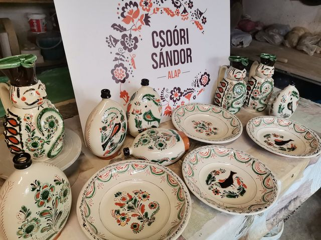

2023 tavasza is tudásátadással telt a fazekasműhelyben a Csoóri Sándor Alapnak köszönhetően, a
Mester és Inas program keretein belül. Idén két inas érkezett, hogy a tiszafüredi fazekasság területén
elmélyítsék eddigi tudásukat és további tapasztalatokra tegyenek szert.
Kriston Helga márciusban kezdte munkáját a tiszafüredi fazekasműhelyben, mestere: Szűcs Andrea.
Korongolt hagyományos edényeken kívül a laptechnikával is megbirkózott: fésű-, gyufa- és sótartót
készített különösen nagy precízséggel, melyekre a modern mázakat alkalmazta. Díszítményüket pedig
áttört és plasztikus rátétekkel kombinálta, a kívánt színek eléréséhez két féle agyagot használt
egyazon edényen. A csuprokon, tányérokon az írókázást és a karcolásos technikát tudta szépen
kivitelezni.
Fias Tamás áprilisban érkezett a műhelybe, hogy az eddig Mezőtúron megszerzett ismereteit tovább
bővítse és Szűcs Imre oktatása által a tiszafüredi fazekas hagyományokba is belekóstolhasson.
Munkája során mestere a csipkés szélű tányérok, butellák és a Miska kancsók felé terelte, melyek
korongozását és díszítését egyaránt szépen teljesítette.
Mindkét inassal élmény volt együtt dolgozni, hiszen jó tanítványok voltak: érdeklődők, szorgalmasak
és megfogadták mestereik tanácsait.
#csoorisandoralap
A közös munka során készült edényeiket az alábbi fotó szemlélteti.

